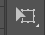

Why I like Animating
I like animation because it helps me find more creativity, its fun and totally easy
There are many softwares but i use Adobe Animte
Adobe Animate (formerly Adobe Flash Professional, Macromedia Flash, and FutureSplash Animator) is a multimedia authoring and computer animation program developed by Adobe Systems.
Animate is used to design vector graphics and animation for television programs, online video, websites, web applications, rich internet applications, and video games. The program also offers support for raster graphics, rich text, audio and video embedding, and ActionScript scripting. Animations may be published for HTML5, WebGL, Scalable Vector Graphics (SVG) animation and spritesheets, and legacy Flash Player (SWF) and Adobe AIR formats.
It was first released in 1996 as FutureSplash Animator, and then renamed Macromedia Flash upon its acquisition by Macromedia. It was created to serve as the main authoring environment for the Adobe Flash platform, vector-based software for creating animated and interactive content. It was renamed Adobe Animate in 2015 to more accurately reflect its market position then, since over a third of all content created in Animate uses HTML5.
There are many many features which help me do my animation like are
Paint Brush tool
The new Paint Brush tool in Animate CC (formerly Flash Professional CC) brings the capability of using Art Brushes and Pattern brushes, as commonly known in Adobe Illustrator, within Animate. Paint Brush tool is based on strokes and is different from the existing Brush tool.
Paint brush tool lets you draw stylized brush strokes by applying the selected art brush’s pattern along the drawn path. You can apply brush strokes to existing paths, use the Paintbrush tool to draw a path and apply a brush stroke simultaneously or customize the smoothening output of your image.

Free Transform Tool
When you use the Free Transform tool or the Transform panel to scale, rotate, and skew instances, groups, and text, Animate saves the original size and rotation values with the object. This lets you remove the transformations you applied and restore the original values

Selection tool
The selection tools are what you will use to select portions of an image to edit. While each of these tools are for selection, they differ in how they go about selecting, and their levels of sophistication vary.
Subselection tool
To reshape a line or shape outline, drag any point on a line using the Selection tool. The pointer changes to indicate what type of reshaping it can perform on the line or fill.
Animate adjusts the curve of the line segment to accommodate the new position of the moved point. If the repositioned point is an end point the line will lengthen or shorten. If the repositioned point is a corner, the line segments forming the corner remain straight as they become longer or shorter.